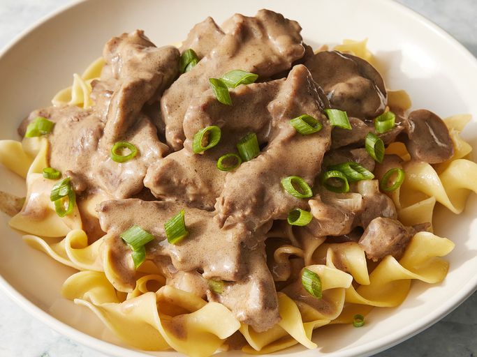

Home
Beef Stroganoff

Description
This beef stroganoff is made with beef chuck roast,
beef broth, white wine, mushrooms, and sour cream.
It is the best I've ever had and well worth
the effort. I have been making this recipe for
over 20 years! Serve over rice or noodles.
Original Recipe
Ingredients
- 2 pounds beef chuck roast
- 1/2 teaspoon ground black pepper
- 1/2 teaspoon salt
- 4 ounces butter
- 4 green onions, sliced (white parts only)
- 4 tablespoons all-purpose flour
- 1 (10.5 ounces) can condensed beef broth
- 1 teaspoon prepared mustard
- 1 (6 ounce) can sliced mushrooms, drained
- 1/3 cup sour cream
- 1/3 cup white wine
Steps
-
Remove any fat and gristle from chuck roast;
cut into strips ½-inch thick by 2-inches long.
Season with ½ teaspoon salt and ½ teaspoon pepper.
-
Melt butter in a large skillet over medium
heat. Add beef and brown quickly.
-
Push beef to one side of the skillet.
Add onions; cook and stir for 3 to 5 minutes,
then push to the side with beef.
- Stir flour into juices on the empty side
of the pan. Pour in beef broth and bring
to a boil, stirring constantly. Lower the
heat and stir in mustard. Cover and simmer
for 1 hour or until the beef is tender.
-
Five minutes before serving,
stir in mushrooms, sour cream, and white wine.
Cook until heated through; season with salt and
pepper.
- Enjoy served over hot cooked noodles.